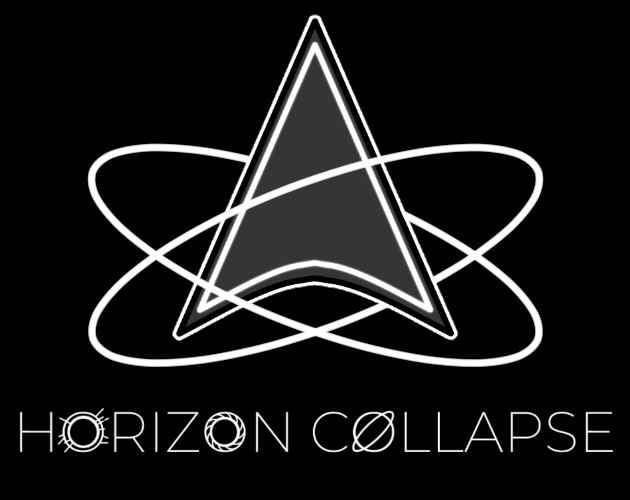
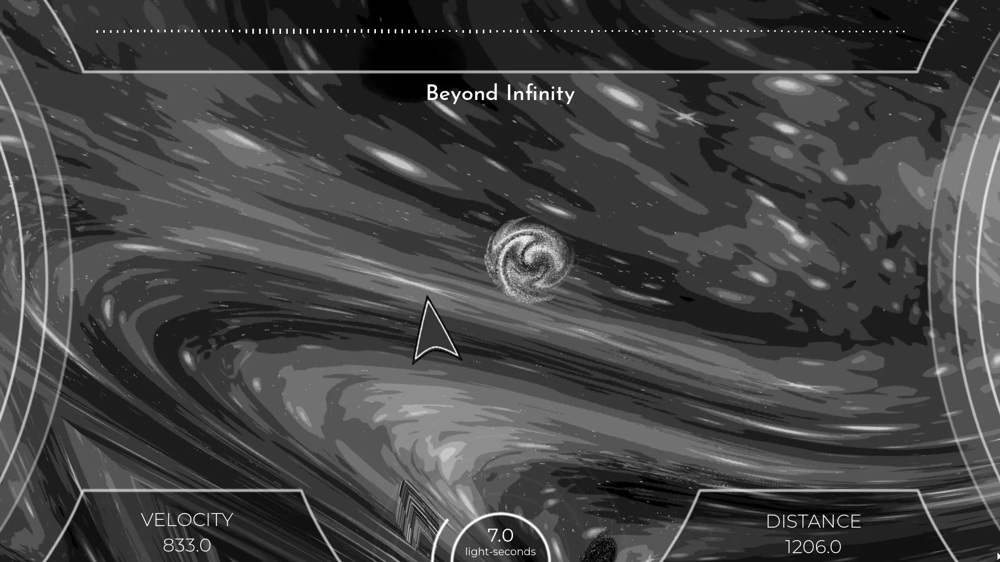
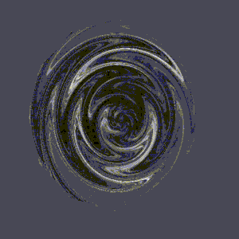
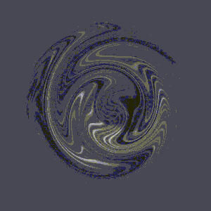
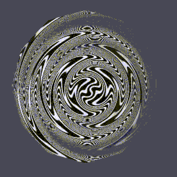
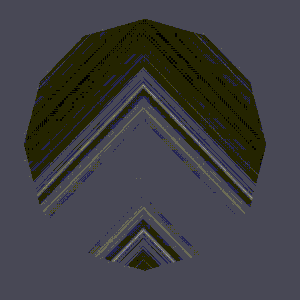
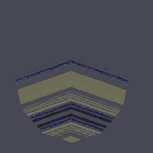
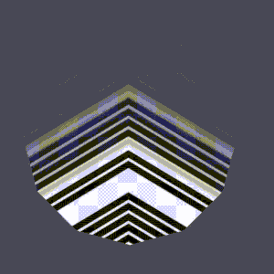

Horizon Collapse
- Links:
- Play on Itch.io
An infinite runner created for the 10 day long Patch Notes v1.1 game jam.
Official Cover
About the project
There is a black hole sucking everything in! Your goal is to try your best and escape from the singularity. Game is designed to be an infinite runner, with a ticking clock. If the timer reaches 0, you lost! You have to dodge gravitational well so you don't lose time. And move through temporal dialation fields in order to gain time!
Game was developed in Godot Engine with a heavy focus on shaders and visual effects.
Gameplay Screenshot
Programming Implementations
In this section I'd like to talk a bit more about how certain things were implemented.
First of all, we wanted the perspective to look as if the screenspace was just a slice of a torus, and for our character to pivot around the singularity. We achieved this effect by using Godot's SubViewport, allowing an independent region to be rendered separately. We do this because we want our game and it's entities to go through a certain transformation, but our UI elemens should remain untouched.
From there, we render our whole SubViewport as a Sprite2D node on top of which we apply our polar coordinate transformation shader!
We place an imaginary point representing the singularity somewhere under the screen, then for each fragment, instead of describing it with it's X and Y coordinate, X coordinate becomes an angle it makes with the singularity, and Y becomes a distance from it.
Shader was written with a lot of modularity in mind, because we had to do a lot of variable tweaking to get it to look right, such as singularity distance, or X and Y fracture, or the amount of curvature we want.
Our whole game is just a very basic 2D style top to bottom infinite scroller, but getting it through this shader achieves such a different kind of look and feel to it!.
Other Shaders and Visual Effects
This section is basically just an excuse to showcase rest of the shaders I've made! :D
Pretty much all objects including the background, have 20+ textures and 2 to 3 uniform variables which are randomized per material change, so we have so much variation that it's almost imposible to capture it all. But here are some of my favorite examples:
-

Gravity Well eg1
-

Gravity Well eg2
-

Gravity Well eg3
-

Dialation Field eg1
-

Dialation Field eg2
-

Dialation Field eg3
And amazingly simple but very cool looking, chromatic aberration effect along with randomized background change!

We use Godot's Tweens to slowly reduce the cromatic aberration back to normal, as well as the background change.
Technologies used
- Godot Engine
- GDScript
- Godot Shading Language
Contributions
- Shaders and Visual Effects
- Gameplay Logic
- Difficulty Balacing
- Playtesting
- Bug fixing